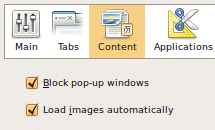
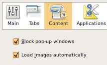

Every Ubuntu user is different, that's why there are thousands of add-ons for Firefox. You can customize the web browser for your every need.
Never have to worry when browsing on the internet, with a built in pop-up blocker & anti-phishing filter, frequent security updates, and a thriving development team there has never been a safer way to get the information you need.

 
